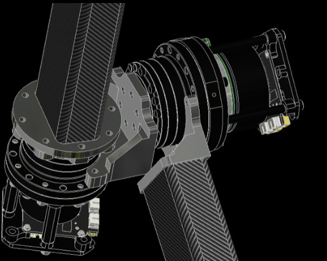
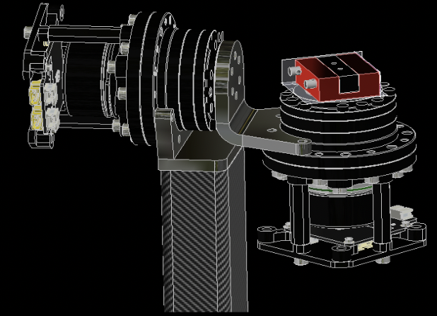
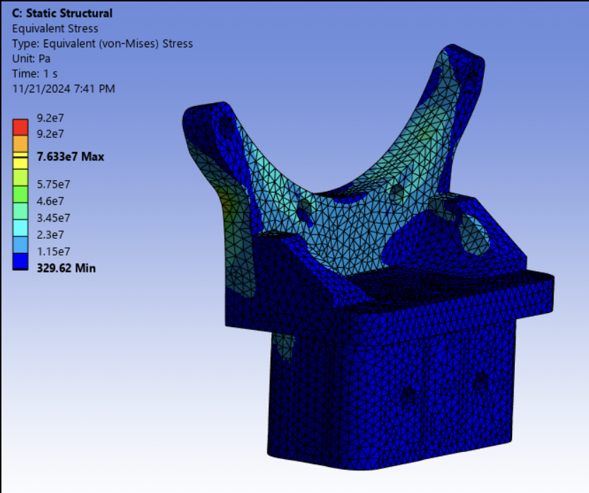

In my junior year, I designed the structure of the robotic manipulator for the Cornell Mars Rover project team. I redesigned the locations of the motors, moving one of the motors to the elbow of the manipulator, in order to reduce the moment created on the base of the robotic manipulator. I took the lead in assembling, wiring, and testing the arm. During testing and competition, I controlled the arm by utilizing a miniature arm, which the larger arm mimics the movements of. My Final Design Review presentation can be found at: FDR Link.
5 kg Cache Testing
I led the assembly and testing of the arm to validate mechanical reliability. This clip captures the critical phase where the manipulator successfully picks up the 5 kg cache, confirming the structural integrity of the elbow redesign.


